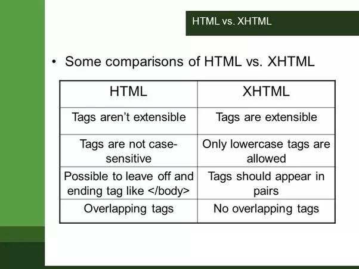

MODULE:1 (HTML)
The HTML tag is just an opening or closing Tag.
For example < p > is starting tag of a paragraph and < /p > is closing tag of the same paragraph but < p >This is paragraph < /p > This is a paragraph Element.
TAG=Which comes between < Angular Brackets >
Element=Start Tag-Some Content-End Tag.
the elements tell the browser what to display, the attributes define how they will behave. The tags mark the beginning and the end of an element. They may not be necessary for some elements, especially the closing tags.
Tags come between angular brecets <>
Attributes are always written in start tag only.
HTML attributes are used to describe the characteristic of an HTML element in detail.
the tag defines hyper link. The href attribute specifies the URL of the page.
The tag is used to embed an image in an HTML page.The src attribute specifies the path to the image

Non-void elements have an end tag to indicate where they end. tag names are used within element start tags and end tags to give the element's name
Void elements can have attributes.like embed , hr , img , input
Void elements only have a start tag
In HTML, a void element must not have an end tag. For example,
Some characters are reserved in HTML. If you use the less than (<) or greater than (>) signs in your text, the browser might mix them with tags. Character entities are used to display reserved characters in HTML.
There are three types of lists in HTML: Unordered list or Bulleted list (ul) Ordered list or Numbered list (ol) Description list or Definition list (dl)
The only difference between them is that “id” is unique in a page and can only apply to at most one element, while “class” selector can apply to multiple elements.
the difference between Class and ID: A Class name can be used by multiple HTML elements, while an ID name must only be used by one HTML element within the page.

< b> - Bold text < strong> - Important text < i> - Italic text < em> - Emphasized text < mark> - Marked text < small> - Smaller text < del> - Deleted text < ins> - Inserted text < sub> - Subscript text < sup> - Superscript text
Cellpadding basically defines the space present between a table cell's border and the content present in it. Cellspacing basically defines the space present between individual adjacent cells

It can be done by using the rowspan and colspan attribute in HTML. The rowspan is used to merge or combine the number of cells in a row whereas the colspan is used to merge column cells in a table.
There are two display values: block and inline. A block-level element always starts on a new line and takes up the full width available. An inline element does not start on a new line and it only takes up as much width as necessary.
Block elements cover space from left to right as far as it can go.
Two commonly used block elements are: < p> and < div>
An inline element does not start on a new line.
An inline element only takes up as much wHwo to create a Hyperlink in HTML?
Create a hyperlink to a location on thidth as necessary.
< span> is inline element.
the text or picture that you want to display as a hyperlink. Press Ctrl+K. You can also right-click the text or picture and click Link on the shortcut menu. In the Insert Hyperlink box, type or paste your link in the Address box.
The < iframe> tag specifies an inline frame. An inline frame is used to embed another document within the current HTML document
If you can edit the page, then you can add an external style sheet or styles right in the document just like you would style any other web page on your site
The < span> tag is an inline container used to mark up a part of a text, or a part of a document.
Span=Standardized portfolio analysis of risk.
< span> it takes that much space which is required for content.
< span> is an inline element.
Example of span tag:red, blue, and green colors for my painting.
The most common & simple way to add background image is using the background image attribute inside the < body> tag. The background attribute which we specified in the < body> tag is not supported in HTML5. Using CSS properties, we can also add background image in a webpage.
Create a folder to hold your HTML file and background image. On your computer, create and name a folder that you can easily find later. You
Put the background image into the HTML folder. Put the image you'd like to use as background into the HTML folder. Tip: If you don't have an image,
Open a text editor or HTML Editor. You can create an HTML file using a basic text editor app such as NotePad on Windows or TextEdit on Mac.

Normal links are unvisited links generally shown in blue color in most of the websites. A link becomes active when you click on it. However the color of the links may vary as they can be customized

We separate a section of texts in HTML using the below tags: < br> tag – It is used to separate the line of text. It breaks the current line and shifts the flow of the text to a new line. < p> tag–This tag is used to write a paragraph of text. < blockquote> tag–This tag is used to define large quoted sections.
SVG stands for Scalable Vector Graphics. SVG is used to define graphics for the Web. SVG is a W3C recommendation.
The < svg> tag defines a container for SVG graphics. SVG has several methods for drawing paths, boxes, circles, text, and graphic images.
HTML is the standard markup language for creating web pages, while XHTML is a stricter and more standardized version of HTML.
Physical and Logical tags are used in HTML for better visibility and understanding of the text by the user on the web page.
LOGICAL TAGS=< abbr>, < acronym>, < address>, < cite>, < code>, < blockquote>, < del>, < dfn>, < ins>, < kbd>, < pre>, < q>, < samp>, < stonge>, < var>.
Physical Tags are used in HTML to provide actual physical formatting to the text. Following are the Physical tags commonly used in HTML.
PHYSICAL TAGS=< b>, < big>, < i>, < small>, < sup>, < sub>, < tt>, < u>.